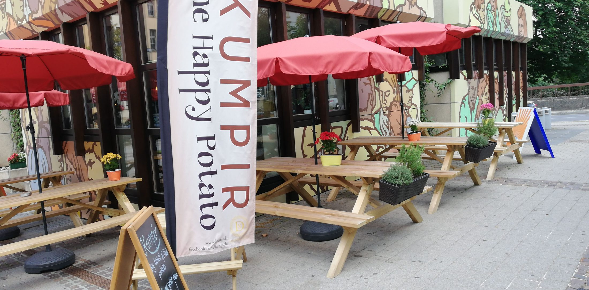
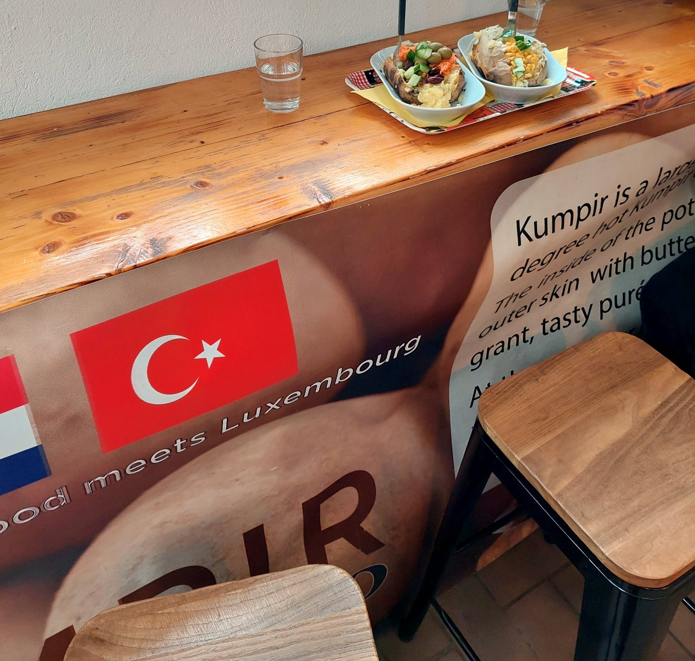
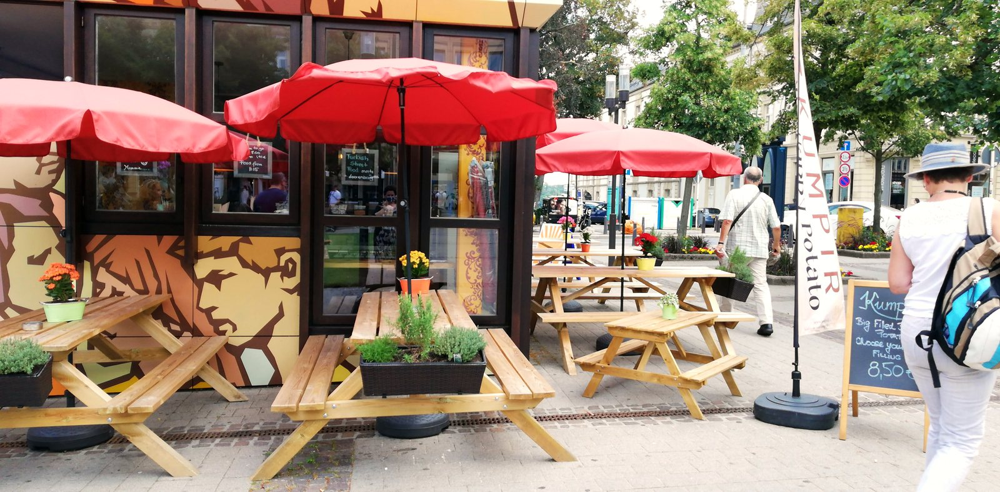
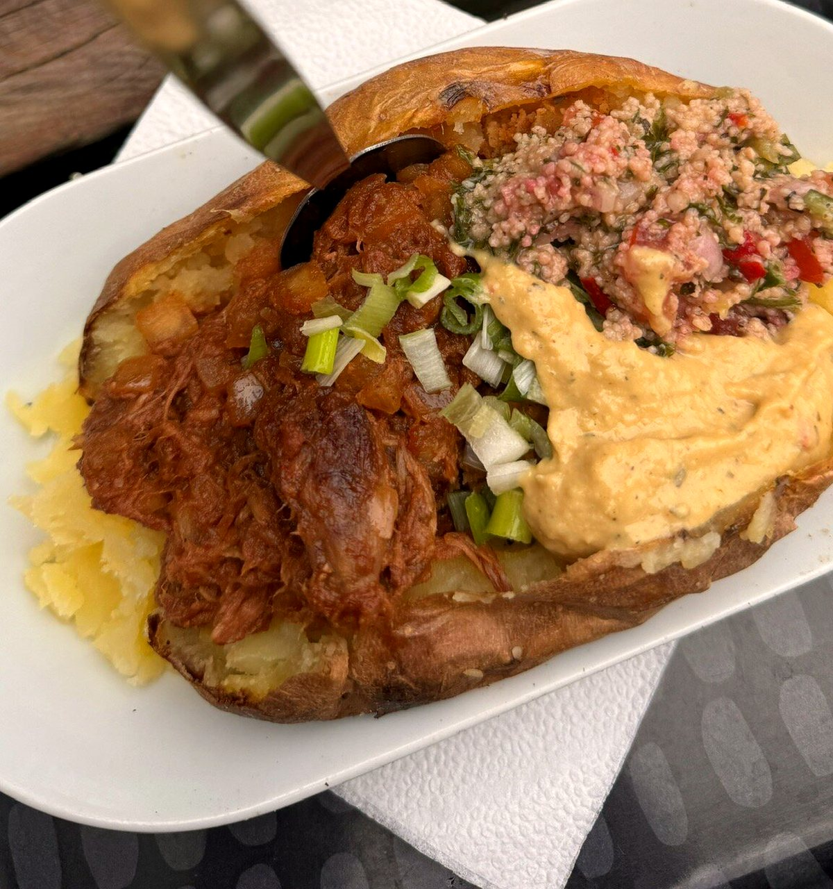

La pomme de terre géante & heureuse
Une énorme pomme de terre au four, sa chair fouettée au beurre et au fromage, puis garnie — comme vous l'aimez — au comptoir. Istanbul rencontre le Luxembourg.

🥔 dès l'origine, un food truckUne patate. Vos garnitures. Aucune règle.
Chez Kumpir, c'est vous qui composez. On fend la pomme de terre, on écrase la chair avec du beurre et du fromage, puis on empile ce que vous voulez au comptoir coloré. Amusez-vous ci-dessous.
Composez votre kumpir
Touchez les garnitures pour les ajouter. (Pour de vrai, ça se passe au comptoir.)
Le comptoir
Des garnitures fraîches, à volonté — voici un échantillon.
Démonstration ludique — les garnitures exactes se choisissent sur place, au comptoir.
Les kumpirs de la maison
Onze recettes signature, chacune bâtie sur la grande pomme de terre — puis garnie au comptoir. Version viande ou 100 % végé.
Boissons



D'un food truck à la Place du Théâtre
Kumpir a commencé sur roues, puis s'est posé au cœur de la ville. La fresque pop, les parasols rouges, les grandes tables en bois : on s'installe, on discute, on choisit ses garnitures une à une. Le patron explique volontiers chaque option — et vous fait goûter avant de choisir.
« Turkish food meets Luxembourg. »
Sur le comptoir veillent les « Positive Potatoes » en crochet : « je ne suis qu'une petite patate, mais je crois en vous. » Toute la maison est là-dedans.
Venir, commander, savourer
🕑 Horaires
⚠ Horaires indicatifs — à confirmer avec la maison.